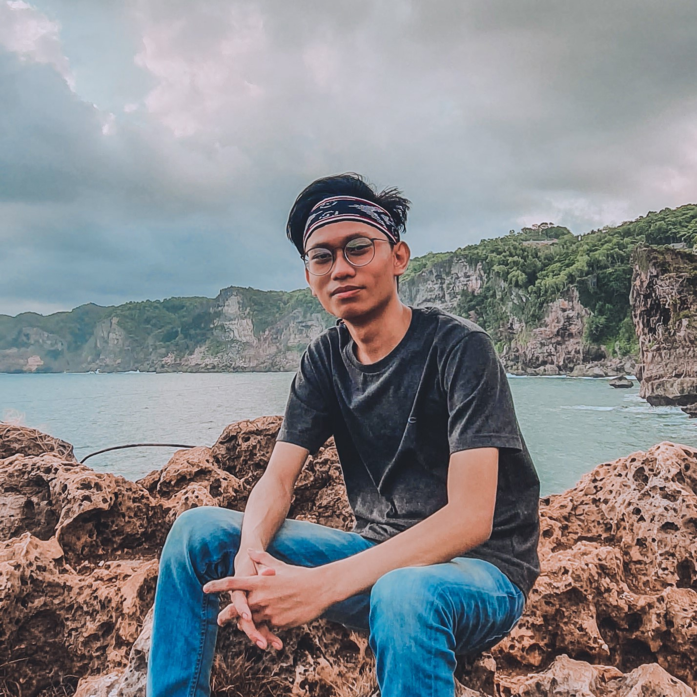

Profil Aing ☕

Nama
Nama Panggilan
Status
Umur
Hobi
:
:
:
:
:
Putra Bagaspati Rohadi
Putra
Kuliah
21 Tahun ♒
Badminton ♥
| Sosial Media | : | |
Tentang saya
Putra is a student of Universitas Pembangunan Nasional Veteran Yogyakarta, majoring in Informatics. He has the experience to work with HTML/CSS, Bootstrap, PHP, Laravel, CodeIgniter. He loves to do an observation, analysis, and belives that he as a good critical thinking in problem solving. He chose to join ZettaCamp because he wants to enhance his skill in web development, especially in Back End Developer. He loves to play badminton during his free time.
- My Skills
- HTML/CSS
- Bootstrap
- PHP
- Laravel
- CodeIgniter
- MySQL